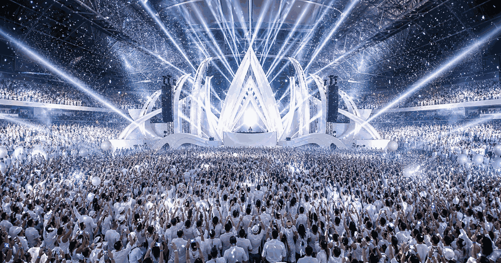

Music festival guide
White Sensation Amsterdam
White Sensation Amsterdam is the all-white arena dance concept associated with Amsterdam: dress code, stadium lighting, central staging and electronic music as a single visual experience.
Explore related festival guides, places and calendar moments.
The event grew from Amsterdam into an international dance brand. The useful evergreen story is the all-white crowd identity, arena staging and light-led production.
For a future edition, the year slide should carry the confirmed date, ticket status, venue rules and line-up. Until then, the page stays as a watchlist.
This is not a competition. The meaningful archive is year, venue, theme, stage production and confirmed line-up.
- 2000: Sensation begins in Amsterdam.
- All-white dress code becomes the signature visitor rule.
- 2017: key final Amsterdam white-edition anchor.
- Future Amsterdam edition: TBC until officially announced.
| Year | What was special | Amsterdam detail |
|---|---|---|
| 2026 | Watchlist only: no confirmed Amsterdam return date. | Keep date, tickets and line-up as TBC until official. |
| 2017 | The Final: farewell Amsterdam edition after eighteen years. | Amsterdam ArenA, 8 July, sold-out final home-city show. |
| 2015 | The Legacy: retrospective edition built around Sensation history. | Amsterdam ArenA, home-city legacy framing. |
| 2010 | Celebrate Life with House: house-music positioning becomes the point. | Amsterdam ArenA, house-focused show direction. |
| 2005 | Space era: clean white arena format becomes exportable. | Amsterdam ArenA, model for later international Sensation shows. |
| 2000 | Launch year: the Amsterdam arena concept begins. | Amsterdam ArenA, origin point in |
Edition guide
White Sensation Amsterdam 2026 watchlist
Choose an edition; only this slide changes.
Historically Sensation Amsterdam sat in early July, but no official 2026 month or date is confirmed.
No confirmed upcoming Amsterdam date is stored in OneSliders yet.
The historic home is Amsterdam in  Netherlands, but the exact future venue must be confirmed by the organiser.
Netherlands, but the exact future venue must be confirmed by the organiser.
Because there is no confirmed Amsterdam edition here, avoid resale listings that claim exact dates before an official announcement.
The all-white crowd look is the signature of the event concept.